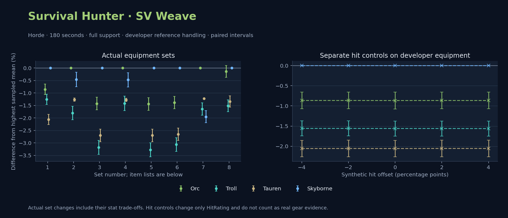

Horde · Orc / Troll / Tauren / Skyborne

No pet or guardian appears in the reference combat metrics. Reference: Orc, developer equipment, 180 seconds and full support. Pet choices remain those of the developer build.
Petless versus Raptor, changing only petType. Original talents and racial policy remain fixed. Developer anchor and validation-selected published gear; 1,000 independent iterations, full support and original developer references. This is a sensitivity check, without pet-family or talent optimization. Gaps compare races within that same pet choice, equipment pool and duration.
| Seconds | Pool | Pet choice | Race | DPS | Gap and interval | Replay |
|---|---|---|---|---|---|---|
| 60 | developer | petless | Orc | 1075.02 | +0.000% ± 0.000 | Input · Result |
| 60 | developer | petless | Troll | 1074.48 | -0.051% ± 0.269 | Input · Result |
| 60 | developer | petless | Skyborne | 1072.20 | -0.263% ± 0.331 | Input · Result |
| 60 | developer | petless | Tauren | 1056.36 | -1.735% ± 0.024 | Input · Result |
| 60 | developer | raptor | Orc | 1040.54 | +0.000% ± 0.000 | Input · Result |
| 60 | developer | raptor | Troll | 1034.50 | -0.580% ± 0.254 | Input · Result |
| 60 | developer | raptor | Skyborne | 1031.58 | -0.861% ± 0.328 | Input · Result |
| 60 | developer | raptor | Tauren | 1018.12 | -2.155% ± 0.021 | Input · Result |
| 60 | published-pre-raid | petless | Orc | 971.49 | +0.000% ± 0.000 | Input · Result |
| 60 | published-pre-raid | petless | Skyborne | 964.15 | -0.756% ± 0.375 | Input · Result |
| 60 | published-pre-raid | petless | Tauren | 955.53 | -1.643% ± 0.023 | Input · Result |
| 60 | published-pre-raid | petless | Troll | 939.48 | -3.295% ± 0.417 | Input · Result |
| 60 | published-pre-raid | raptor | Orc | 951.72 | +0.000% ± 0.000 | Input · Result |
| 60 | published-pre-raid | raptor | Skyborne | 942.25 | -0.994% ± 0.328 | Input · Result |
| 60 | published-pre-raid | raptor | Tauren | 931.72 | -2.101% ± 0.021 | Input · Result |
| 60 | published-pre-raid | raptor | Troll | 920.19 | -3.312% ± 0.391 | Input · Result |
| 180 | developer | petless | Skyborne | 1068.53 | +0.000% ± 0.000 | Input · Result |
| 180 | developer | petless | Orc | 1057.67 | -1.016% ± 0.200 | Input · Result |
| 180 | developer | petless | Troll | 1052.36 | -1.513% ± 0.202 | Input · Result |
| 180 | developer | petless | Tauren | 1044.86 | -2.215% ± 0.198 | Input · Result |
| 180 | developer | raptor | Skyborne | 1025.13 | +0.000% ± 0.000 | Input · Result |
| 180 | developer | raptor | Orc | 1023.02 | -0.206% ± 0.202 | Input · Result |
| 180 | developer | raptor | Troll | 1011.85 | -1.295% ± 0.196 | Input · Result |
| 180 | developer | raptor | Tauren | 1005.73 | -1.892% ± 0.199 | Input · Result |
| 180 | published-pre-raid | petless | Skyborne | 958.98 | +0.000% ± 0.000 | Input · Result |
| 180 | published-pre-raid | petless | Orc | 957.05 | -0.201% ± 0.226 | Input · Result |
| 180 | published-pre-raid | petless | Troll | 946.26 | -1.326% ± 0.241 | Input · Result |
| 180 | published-pre-raid | petless | Tauren | 945.54 | -1.401% ± 0.223 | Input · Result |
| 180 | published-pre-raid | raptor | Orc | 938.30 | +0.000% ± 0.000 | Input · Result |
| 180 | published-pre-raid | raptor | Skyborne | 934.68 | -0.385% ± 0.209 | Input · Result |
| 180 | published-pre-raid | raptor | Troll | 922.63 | -1.670% ± 0.220 | Input · Result |
| 180 | published-pre-raid | raptor | Tauren | 922.20 | -1.715% ± 0.012 | Input · Result |
| 300 | developer | petless | Skyborne | 1065.67 | +0.000% ± 0.000 | Input · Result |
| 300 | developer | petless | Orc | 1055.89 | -0.918% ± 0.158 | Input · Result |
| 300 | developer | petless | Troll | 1051.00 | -1.377% ± 0.156 | Input · Result |
| 300 | developer | petless | Tauren | 1044.17 | -2.018% ± 0.157 | Input · Result |
| 300 | developer | raptor | Skyborne | 1022.43 | +0.000% ± 0.000 | Input · Result |
| 300 | developer | raptor | Orc | 1021.25 | -0.115% ± 0.157 | Input · Result |
| 300 | developer | raptor | Troll | 1010.42 | -1.175% ± 0.155 | Input · Result |
| 300 | developer | raptor | Tauren | 1004.94 | -1.711% ± 0.155 | Input · Result |
| 300 | published-pre-raid | petless | Skyborne | 955.34 | +0.000% ± 0.000 | Input · Result |
| 300 | published-pre-raid | petless | Orc | 953.75 | -0.167% ± 0.185 | Input · Result |
| 300 | published-pre-raid | petless | Troll | 948.38 | -0.729% ± 0.188 | Input · Result |
| 300 | published-pre-raid | petless | Tauren | 943.26 | -1.265% ± 0.183 | Input · Result |
| 300 | published-pre-raid | raptor | Orc | 935.76 | +0.000% ± 0.000 | Input · Result |
| 300 | published-pre-raid | raptor | Skyborne | 931.10 | -0.498% ± 0.166 | Input · Result |
| 300 | published-pre-raid | raptor | Troll | 924.19 | -1.237% ± 0.175 | Input · Result |
| 300 | published-pre-raid | raptor | Tauren | 920.50 | -1.630% ± 0.009 | Input · Result |
WoWSims developer · P1
Unimplemented enchant or active set effects: [{"id": 441, "pieces": 3, "effects": ["Minor increase to running and swimming speed. Does not stack with similar effects."]}]
180 seconds, full support and original developer references. Hit below is generic sheet melee / spell hit; school and talent bonuses can be attached directly to spells.
| Race | DPS | Gap and interval | Generic hit | Replay |
|---|---|---|---|---|
| Skyborne | 1067.28 | +0.000% ± 0.000 | 16.0% / 14.0% | Native input · Website JSON |
| Orc | 1058.17 | -0.854% ± 0.207 | 16.0% / 14.0% | Native input · Website JSON |
| Troll | 1053.90 | -1.254% ± 0.201 | 16.0% / 14.0% | Native input · Website JSON |
| Tauren | 1045.33 | -2.057% ± 0.204 | 16.0% / 14.0% | Native input · Website JSON |
| Slot | Item | ID | Enchant |
|---|---|---|---|
| Head | Lieutenant Commander's Chain Helmet | 16428 | Falcon's Call |
| Neck | Fury of the Forgotten Swarm | 21809 | |
| Shoulder | Spaulders of the Unseen | 13116 | |
| Back | Earthweave Cloak | 21187 | Enchant Cloak - Agility |
| Chest | Primal Batskin Jerkin | 19685 | Enchant Chest - Greater Stats |
| Wrist | Primal Batskin Bracers | 19687 | Enchant Bracer - Agility |
| Hands | Primal Batskin Gloves | 19686 | Enchant Gloves - Greater Agility |
| Waist | Belt of Preserved Heads | 20216 | |
| Legs | Leggings of the Plague Hunter | 22690 | Falcon's Call |
| Feet | Mongoose Boots | 18506 | Enchant Boots - Agility |
| Ring 1 | Cutthroat's Signet | 272408 | |
| Ring 2 | Band of Earthen Might | 21182 | |
| Trinket 1 | Adaptive Combat Assistant | 272437 | |
| Trinket 2 | Cleansed Vilebranch Icon | 270276 | |
| Main hand | Legionite Glaive | 250619 | Enchant 2H Weapon - Agility |
| Ranged / relic | Fahrad's Reloading Repeater | 22347 | SAF-T Ultra Precision Scope |
Published gear / developer ammo-quiver control · Published equipment with developer ranged inputs
Recorded source replacements: [{"slot": "back", "from": 13340, "to": 18511, "publishedAlternativeRank": 1, "publishedEpDelta": -28.4, "reason": "First published alternative compatible with the current WoWSims database, class, faction and occupied slots."}, {"slot": "finger2", "from": 9533, "to": 285190, "publishedAlternativeRank": 2, "publishedEpDelta": -15, "reason": "First published alternative compatible with the current WoWSims database, class, faction and occupied slots."}]
Unimplemented enchant or active set effects: [{"id": 143, "pieces": 2, "effects": ["Improves your chance to hit by 2.0%."]}]
180 seconds, full support and original developer references. Hit below is generic sheet melee / spell hit; school and talent bonuses can be attached directly to spells.
| Race | DPS | Gap and interval | Generic hit | Replay |
|---|---|---|---|---|
| Orc | 921.75 | +0.000% ± 0.000 | 5.7% / 5.7% | Native input · Website JSON |
| Skyborne | 917.50 | -0.462% ± 0.288 | 5.7% / 5.7% | Native input · Website JSON |
| Tauren | 910.07 | -1.267% ± 0.065 | 5.7% / 5.7% | Native input · Website JSON |
| Troll | 905.12 | -1.804% ± 0.269 | 5.7% / 5.7% | Native input · Website JSON |
| Slot | Item | ID | Enchant |
|---|---|---|---|
| Head | Black Dragonscale Helm | 252605 | Lesser Arcane Amalgamation |
| Neck | Skibi's Pendant | 13089 | Enchant Necklace - Agility |
| Shoulder | Spaulders of the Unseen | 13116 | |
| Back | Shifting Cloak | 18511 | Enchant Cloak - Agility |
| Chest | Dawn Armor | 252483 | Enchant Chest - Greater Stats |
| Wrist | Deepfury Bracers | 13120 | Enchant Bracer - Agility |
| Hands | Devilsaur Gauntlets | 15063 | Enchant Gloves - Greater Agility |
| Waist | Ranger's Belt | 272397 | |
| Legs | Devilsaur Leggings | 15062 | Lesser Arcane Amalgamation |
| Feet | Mongoose Boots | 18506 | Enchant Boots - Greater Agility |
| Ring 1 | Cutthroat's Signet | 272408 | |
| Ring 2 | Wyvern Heart Band | 285190 | |
| Trinket 1 | Adaptive Combat Assistant | 272437 | |
| Trinket 2 | Rune of the Guard Captain | 19120 | |
| Main hand | Arcanite Reaper | 12784 | Enchant 2H Weapon - Lesser Agility |
| Ranged / relic | Eaglehorn Long Bow | 13023 | SAF-T Ultra Precision Scope |
Published ranked alternatives · Published pre-raid
Source ammunition and quiver settings: {"ammo": "ThoriumHeadedArrow", "quiverBonus": "QuickdrawQuiver"}
Recorded source replacements: [{"slot": "back", "from": 13340, "to": 18511, "publishedAlternativeRank": 1, "publishedEpDelta": -28.4, "reason": "First published alternative compatible with the current WoWSims database, class, faction and occupied slots."}, {"slot": "finger2", "from": 9533, "to": 285190, "publishedAlternativeRank": 2, "publishedEpDelta": -15, "reason": "First published alternative compatible with the current WoWSims database, class, faction and occupied slots."}]
Unimplemented enchant or active set effects: [{"id": 143, "pieces": 2, "effects": ["Improves your chance to hit by 2.0%."]}]
180 seconds, full support and original developer references. Hit below is generic sheet melee / spell hit; school and talent bonuses can be attached directly to spells.
| Race | DPS | Gap and interval | Generic hit | Replay |
|---|---|---|---|---|
| Skyborne | 937.14 | +0.000% ± 0.000 | 5.7% / 5.7% | Native input · Website JSON |
| Orc | 923.79 | -1.425% ± 0.252 | 5.7% / 5.7% | Native input · Website JSON |
| Tauren | 911.84 | -2.701% ± 0.250 | 5.7% / 5.7% | Native input · Website JSON |
| Troll | 907.33 | -3.181% ± 0.280 | 5.7% / 5.7% | Native input · Website JSON |
| Slot | Item | ID | Enchant |
|---|---|---|---|
| Head | Black Dragonscale Helm | 252605 | Lesser Arcane Amalgamation |
| Neck | Skibi's Pendant | 13089 | Enchant Necklace - Agility |
| Shoulder | Spaulders of the Unseen | 13116 | |
| Back | Shifting Cloak | 18511 | Enchant Cloak - Agility |
| Chest | Dawn Armor | 252483 | Enchant Chest - Greater Stats |
| Wrist | Deepfury Bracers | 13120 | Enchant Bracer - Agility |
| Hands | Devilsaur Gauntlets | 15063 | Enchant Gloves - Greater Agility |
| Waist | Ranger's Belt | 272397 | |
| Legs | Devilsaur Leggings | 15062 | Lesser Arcane Amalgamation |
| Feet | Mongoose Boots | 18506 | Enchant Boots - Greater Agility |
| Ring 1 | Cutthroat's Signet | 272408 | |
| Ring 2 | Wyvern Heart Band | 285190 | |
| Trinket 1 | Adaptive Combat Assistant | 272437 | |
| Trinket 2 | Rune of the Guard Captain | 19120 | |
| Main hand | Arcanite Reaper | 12784 | Enchant 2H Weapon - Lesser Agility |
| Ranged / relic | Eaglehorn Long Bow | 13023 | SAF-T Ultra Precision Scope |
Published gear / developer ammo-quiver control · Published equipment with developer ranged inputs
One source-listed alternative; at least 80% of the source slot score retained. Reported hit selects the contrast; only native stats determine simulation outcomes. This is an experimental combination, not an endorsed best set.
Recorded source replacements: [{"slot": "back", "from": 13340, "to": 18511, "publishedAlternativeRank": 1, "publishedEpDelta": -28.4, "reason": "First published alternative compatible with the current WoWSims database, class, faction and occupied slots."}, {"slot": "finger2", "from": 9533, "to": 285190, "publishedAlternativeRank": 2, "publishedEpDelta": -15, "reason": "First published alternative compatible with the current WoWSims database, class, faction and occupied slots."}]
Unimplemented enchant or active set effects: [{"id": 143, "pieces": 2, "effects": ["Improves your chance to hit by 2.0%."]}]
180 seconds, full support and original developer references. Hit below is generic sheet melee / spell hit; school and talent bonuses can be attached directly to spells.
| Race | DPS | Gap and interval | Generic hit | Replay |
|---|---|---|---|---|
| Orc | 923.06 | +0.000% ± 0.000 | 6.0% / 6.0% | Native input · Website JSON |
| Skyborne | 918.66 | -0.477% ± 0.285 | 6.0% / 6.0% | Native input · Website JSON |
| Tauren | 911.29 | -1.275% ± 0.065 | 6.0% / 6.0% | Native input · Website JSON |
| Troll | 910.01 | -1.414% ± 0.289 | 6.0% / 6.0% | Native input · Website JSON |
| Slot | Item | ID | Enchant |
|---|---|---|---|
| Head | Black Dragonscale Helm | 252605 | Lesser Arcane Amalgamation |
| Neck | Skibi's Pendant | 13089 | Enchant Necklace - Agility |
| Shoulder | Spaulders of the Unseen | 13116 | |
| Back | Shifting Cloak | 18511 | Enchant Cloak - Agility |
| Chest | Dawn Armor | 252483 | Enchant Chest - Greater Stats |
| Wrist | Deepfury Bracers | 13120 | Enchant Bracer - Agility |
| Hands | Devilsaur Gauntlets | 15063 | Enchant Gloves - Greater Agility |
| Waist | Ranger's Belt | 272397 | |
| Legs | Devilsaur Leggings | 15062 | Lesser Arcane Amalgamation |
| Feet | Shadowcraft Boots | 16711 | Enchant Boots - Greater Agility |
| Ring 1 | Cutthroat's Signet | 272408 | |
| Ring 2 | Wyvern Heart Band | 285190 | |
| Trinket 1 | Adaptive Combat Assistant | 272437 | |
| Trinket 2 | Rune of the Guard Captain | 19120 | |
| Main hand | Arcanite Reaper | 12784 | Enchant 2H Weapon - Lesser Agility |
| Ranged / relic | Eaglehorn Long Bow | 13023 | SAF-T Ultra Precision Scope |
Published one-slot hit alternative · Published pre-raid
Source ammunition and quiver settings: {"ammo": "ThoriumHeadedArrow", "quiverBonus": "QuickdrawQuiver"}
One source-listed alternative; at least 80% of the source slot score retained. Reported hit selects the contrast; only native stats determine simulation outcomes. This is an experimental combination, not an endorsed best set.
Recorded source replacements: [{"slot": "back", "from": 13340, "to": 18511, "publishedAlternativeRank": 1, "publishedEpDelta": -28.4, "reason": "First published alternative compatible with the current WoWSims database, class, faction and occupied slots."}, {"slot": "finger2", "from": 9533, "to": 285190, "publishedAlternativeRank": 2, "publishedEpDelta": -15, "reason": "First published alternative compatible with the current WoWSims database, class, faction and occupied slots."}]
Unimplemented enchant or active set effects: [{"id": 143, "pieces": 2, "effects": ["Improves your chance to hit by 2.0%."]}]
180 seconds, full support and original developer references. Hit below is generic sheet melee / spell hit; school and talent bonuses can be attached directly to spells.
| Race | DPS | Gap and interval | Generic hit | Replay |
|---|---|---|---|---|
| Skyborne | 938.69 | +0.000% ± 0.000 | 6.0% / 6.0% | Native input · Website JSON |
| Orc | 925.14 | -1.444% ± 0.254 | 6.0% / 6.0% | Native input · Website JSON |
| Tauren | 913.35 | -2.700% ± 0.253 | 6.0% / 6.0% | Native input · Website JSON |
| Troll | 907.97 | -3.272% ± 0.281 | 6.0% / 6.0% | Native input · Website JSON |
| Slot | Item | ID | Enchant |
|---|---|---|---|
| Head | Black Dragonscale Helm | 252605 | Lesser Arcane Amalgamation |
| Neck | Skibi's Pendant | 13089 | Enchant Necklace - Agility |
| Shoulder | Spaulders of the Unseen | 13116 | |
| Back | Shifting Cloak | 18511 | Enchant Cloak - Agility |
| Chest | Dawn Armor | 252483 | Enchant Chest - Greater Stats |
| Wrist | Deepfury Bracers | 13120 | Enchant Bracer - Agility |
| Hands | Devilsaur Gauntlets | 15063 | Enchant Gloves - Greater Agility |
| Waist | Ranger's Belt | 272397 | |
| Legs | Devilsaur Leggings | 15062 | Lesser Arcane Amalgamation |
| Feet | Shadowcraft Boots | 16711 | Enchant Boots - Greater Agility |
| Ring 1 | Cutthroat's Signet | 272408 | |
| Ring 2 | Wyvern Heart Band | 285190 | |
| Trinket 1 | Adaptive Combat Assistant | 272437 | |
| Trinket 2 | Rune of the Guard Captain | 19120 | |
| Main hand | Arcanite Reaper | 12784 | Enchant 2H Weapon - Lesser Agility |
| Ranged / relic | Eaglehorn Long Bow | 13023 | SAF-T Ultra Precision Scope |
Published ranked alternatives · Published pre-raid
Source ammunition and quiver settings: {"ammo": "SwiftfeatherArrow", "quiverBonus": "QuickdrawQuiver"}
Recorded source replacements: [{"slot": "back", "from": 13340, "to": 18511, "publishedAlternativeRank": 1, "publishedEpDelta": -28.4, "reason": "First published alternative compatible with the current WoWSims database, class, faction and occupied slots."}, {"slot": "finger2", "from": 9533, "to": 285190, "publishedAlternativeRank": 2, "publishedEpDelta": -15, "reason": "First published alternative compatible with the current WoWSims database, class, faction and occupied slots."}]
Unimplemented enchant or active set effects: [{"id": 143, "pieces": 2, "effects": ["Improves your chance to hit by 2.0%."]}]
180 seconds, full support and original developer references. Hit below is generic sheet melee / spell hit; school and talent bonuses can be attached directly to spells.
| Race | DPS | Gap and interval | Generic hit | Replay |
|---|---|---|---|---|
| Skyborne | 947.30 | +0.000% ± 0.000 | 5.7% / 5.7% | Native input · Website JSON |
| Orc | 934.16 | -1.388% ± 0.249 | 5.7% / 5.7% | Native input · Website JSON |
| Tauren | 922.21 | -2.648% ± 0.247 | 5.7% / 5.7% | Native input · Website JSON |
| Troll | 918.28 | -3.063% ± 0.276 | 5.7% / 5.7% | Native input · Website JSON |
| Slot | Item | ID | Enchant |
|---|---|---|---|
| Head | Black Dragonscale Helm | 252605 | Lesser Arcane Amalgamation |
| Neck | Skibi's Pendant | 13089 | Enchant Necklace - Agility |
| Shoulder | Spaulders of the Unseen | 13116 | |
| Back | Shifting Cloak | 18511 | Enchant Cloak - Agility |
| Chest | Dawn Armor | 252483 | Enchant Chest - Greater Stats |
| Wrist | Deepfury Bracers | 13120 | Enchant Bracer - Agility |
| Hands | Devilsaur Gauntlets | 15063 | Enchant Gloves - Greater Agility |
| Waist | Ranger's Belt | 272397 | |
| Legs | Devilsaur Leggings | 15062 | Lesser Arcane Amalgamation |
| Feet | Mongoose Boots | 18506 | Enchant Boots - Greater Agility |
| Ring 1 | Cutthroat's Signet | 272408 | |
| Ring 2 | Wyvern Heart Band | 285190 | |
| Trinket 1 | Adaptive Combat Assistant | 272437 | |
| Trinket 2 | Rune of the Guard Captain | 19120 | |
| Main hand | Arcanite Reaper | 12784 | Enchant 2H Weapon - Lesser Agility |
| Ranged / relic | Eaglehorn Long Bow | 13023 | SAF-T Ultra Precision Scope |
Published gear / developer ammo-quiver control · Published equipment with developer ranged inputs
One source-listed alternative; at least 80% of the source slot score retained. Reported hit selects the contrast; only native stats determine simulation outcomes. This is an experimental combination, not an endorsed best set.
Recorded source replacements: [{"slot": "back", "from": 13340, "to": 18511, "publishedAlternativeRank": 1, "publishedEpDelta": -28.4, "reason": "First published alternative compatible with the current WoWSims database, class, faction and occupied slots."}, {"slot": "finger2", "from": 9533, "to": 285190, "publishedAlternativeRank": 2, "publishedEpDelta": -15, "reason": "First published alternative compatible with the current WoWSims database, class, faction and occupied slots."}]
Unimplemented enchant or active set effects: [{"id": 143, "pieces": 2, "effects": ["Improves your chance to hit by 2.0%."]}]
180 seconds, full support and original developer references. Hit below is generic sheet melee / spell hit; school and talent bonuses can be attached directly to spells.
| Race | DPS | Gap and interval | Generic hit | Replay |
|---|---|---|---|---|
| Orc | 953.21 | +0.000% ± 0.000 | 6.7% / 6.7% | Native input · Website JSON |
| Tauren | 941.55 | -1.223% ± 0.015 | 6.7% / 6.7% | Native input · Website JSON |
| Troll | 937.58 | -1.640% ± 0.247 | 6.7% / 6.7% | Native input · Website JSON |
| Skyborne | 934.62 | -1.950% ± 0.243 | 6.7% / 6.7% | Native input · Website JSON |
| Slot | Item | ID | Enchant |
|---|---|---|---|
| Head | Black Dragonscale Helm | 252605 | Lesser Arcane Amalgamation |
| Neck | Skibi's Pendant | 13089 | Enchant Necklace - Agility |
| Shoulder | Spaulders of the Unseen | 13116 | |
| Back | Shifting Cloak | 18511 | Enchant Cloak - Agility |
| Chest | Dawn Armor | 252483 | Enchant Chest - Greater Stats |
| Wrist | Deepfury Bracers | 13120 | Enchant Bracer - Agility |
| Hands | Devilsaur Gauntlets | 15063 | Enchant Gloves - Greater Agility |
| Waist | Ranger's Belt | 272397 | |
| Legs | Devilsaur Leggings | 15062 | Lesser Arcane Amalgamation |
| Feet | Mongoose Boots | 18506 | Enchant Boots - Greater Agility |
| Ring 1 | Cutthroat's Signet | 272408 | |
| Ring 2 | Wyvern Heart Band | 285190 | |
| Trinket 1 | Adaptive Combat Assistant | 272437 | |
| Trinket 2 | Rune of the Guard Captain | 19120 | |
| Main hand | Legionite Glaive | 250619 | Enchant 2H Weapon - Lesser Agility |
| Ranged / relic | Eaglehorn Long Bow | 13023 | SAF-T Ultra Precision Scope |
Published one-slot hit alternative · Published pre-raid
Source ammunition and quiver settings: {"ammo": "SwiftfeatherArrow", "quiverBonus": "QuickdrawQuiver"}
One source-listed alternative; at least 80% of the source slot score retained. Reported hit selects the contrast; only native stats determine simulation outcomes. This is an experimental combination, not an endorsed best set.
Recorded source replacements: [{"slot": "back", "from": 13340, "to": 18511, "publishedAlternativeRank": 1, "publishedEpDelta": -28.4, "reason": "First published alternative compatible with the current WoWSims database, class, faction and occupied slots."}, {"slot": "finger2", "from": 9533, "to": 285190, "publishedAlternativeRank": 2, "publishedEpDelta": -15, "reason": "First published alternative compatible with the current WoWSims database, class, faction and occupied slots."}]
Unimplemented enchant or active set effects: [{"id": 143, "pieces": 2, "effects": ["Improves your chance to hit by 2.0%."]}]
180 seconds, full support and original developer references. Hit below is generic sheet melee / spell hit; school and talent bonuses can be attached directly to spells.
| Race | DPS | Gap and interval | Generic hit | Replay |
|---|---|---|---|---|
| Skyborne | 959.94 | +0.000% ± 0.000 | 6.7% / 6.7% | Native input · Website JSON |
| Orc | 958.61 | -0.138% ± 0.232 | 6.7% / 6.7% | Native input · Website JSON |
| Tauren | 947.06 | -1.341% ± 0.230 | 6.7% / 6.7% | Native input · Website JSON |
| Troll | 945.40 | -1.514% ± 0.241 | 6.7% / 6.7% | Native input · Website JSON |
| Slot | Item | ID | Enchant |
|---|---|---|---|
| Head | Black Dragonscale Helm | 252605 | Lesser Arcane Amalgamation |
| Neck | Skibi's Pendant | 13089 | Enchant Necklace - Agility |
| Shoulder | Spaulders of the Unseen | 13116 | |
| Back | Shifting Cloak | 18511 | Enchant Cloak - Agility |
| Chest | Dawn Armor | 252483 | Enchant Chest - Greater Stats |
| Wrist | Deepfury Bracers | 13120 | Enchant Bracer - Agility |
| Hands | Devilsaur Gauntlets | 15063 | Enchant Gloves - Greater Agility |
| Waist | Ranger's Belt | 272397 | |
| Legs | Devilsaur Leggings | 15062 | Lesser Arcane Amalgamation |
| Feet | Mongoose Boots | 18506 | Enchant Boots - Greater Agility |
| Ring 1 | Cutthroat's Signet | 272408 | |
| Ring 2 | Wyvern Heart Band | 285190 | |
| Trinket 1 | Adaptive Combat Assistant | 272437 | |
| Trinket 2 | Rune of the Guard Captain | 19120 | |
| Main hand | Legionite Glaive | 250619 | Enchant 2H Weapon - Lesser Agility |
| Ranged / relic | Eaglehorn Long Bow | 13023 | SAF-T Ultra Precision Scope |
The same declared pool is available to every race. Each race keeps its best validation-sample set with its screening-selected racial policy. Separate samples confirm that choice, with fresh precision samples near the practical-loss boundary. Gaps use the highest sampled mean under that same duration, support and reference treatment as their reference. A zero reference gap does not certify a race; the main matrix also allows uncertainty in the leader.
| Pool | Seconds | Support | References | Race | DPS | Gap and interval | Racial policies / mana | Selected set | Generic hit: melee / spell | Replay |
|---|---|---|---|---|---|---|---|---|---|---|
| published-pre-raid | 60 | full | developer | Orc | 977.11 | +0.000% ± 0.00020,000 iterations | oncd / developer / developerMana waits 0.0s | published-hunter-sv-weave-horde-21473ab145b57c84-source-ammo | 5.7% / 5.7% | Input · Result · Stats |
| published-pre-raid | 60 | full | developer | Skyborne | 970.76 | -0.651% ± 0.08120,000 iterations | developer / developer / developerMana waits 0.0s | published-hunter-sv-weave-horde-21473ab145b57c84-source-ammo | 5.7% / 5.7% | Input · Result · Stats |
| published-pre-raid | 60 | full | developer | Tauren | 961.04 | -1.645% ± 0.00520,000 iterations | developer / developer / developerMana waits 0.0s | published-hunter-sv-weave-horde-21473ab145b57c84-source-ammo | 5.7% / 5.7% | Input · Result · Stats |
| published-pre-raid | 60 | full | developer | Troll | 944.00 | -3.389% ± 0.09320,000 iterations | oncd / developer / developerMana waits 0.0s | published-hunter-sv-weave-horde-21473ab145b57c84-higher-hit-source-ammo | 6.7% / 6.7% | Input · Result · Stats |
| published-pre-raid | 60 | full | explicit | Orc | 977.11 | +0.000% ± 0.00020,000 iterations | oncd / developer / developerMana waits 0.0s | published-hunter-sv-weave-horde-21473ab145b57c84-source-ammo | 5.7% / 5.7% | Input · Result · Stats |
| published-pre-raid | 60 | full | explicit | Skyborne | 970.76 | -0.651% ± 0.08120,000 iterations | developer / developer / developerMana waits 0.0s | published-hunter-sv-weave-horde-21473ab145b57c84-source-ammo | 5.7% / 5.7% | Input · Result · Stats |
| published-pre-raid | 60 | full | explicit | Tauren | 961.04 | -1.645% ± 0.00520,000 iterations | developer / developer / developerMana waits 0.0s | published-hunter-sv-weave-horde-21473ab145b57c84-source-ammo | 5.7% / 5.7% | Input · Result · Stats |
| published-pre-raid | 60 | full | explicit | Troll | 944.00 | -3.389% ± 0.09320,000 iterations | oncd / developer / developerMana waits 0.0s | published-hunter-sv-weave-horde-21473ab145b57c84-higher-hit-source-ammo | 6.7% / 6.7% | Input · Result · Stats |
| published-pre-raid | 60 | self | developer | Orc | 548.69 | +0.000% ± 0.00020,000 iterations | developer / developer / developerMana waits 0.0s | published-hunter-sv-weave-horde-21473ab145b57c84-source-ammo | 5.7% / 5.7% | Input · Result · Stats |
| published-pre-raid | 60 | self | developer | Skyborne | 542.59 | -1.112% ± 0.06520,000 iterations | developer / developer / developerMana waits 0.0s | published-hunter-sv-weave-horde-21473ab145b57c84-source-ammo | 5.7% / 5.7% | Input · Result · Stats |
| published-pre-raid | 60 | self | developer | Tauren | 540.94 | -1.413% ± 0.00520,000 iterations | developer / developer / developerMana waits 0.0s | published-hunter-sv-weave-horde-21473ab145b57c84-source-ammo | 5.7% / 5.7% | Input · Result · Stats |
| published-pre-raid | 60 | self | developer | Troll | 530.48 | -3.319% ± 0.07920,000 iterations | oncd / developer / developerMana waits 0.0s | published-hunter-sv-weave-horde-21473ab145b57c84-higher-hit-source-ammo | 6.7% / 6.7% | Input · Result · Stats |
| published-pre-raid | 60 | self | explicit | Orc | 548.69 | +0.000% ± 0.00020,000 iterations | developer / developer / developerMana waits 0.0s | published-hunter-sv-weave-horde-21473ab145b57c84-source-ammo | 5.7% / 5.7% | Input · Result · Stats |
| published-pre-raid | 60 | self | explicit | Skyborne | 542.59 | -1.112% ± 0.06520,000 iterations | developer / developer / developerMana waits 0.0s | published-hunter-sv-weave-horde-21473ab145b57c84-source-ammo | 5.7% / 5.7% | Input · Result · Stats |
| published-pre-raid | 60 | self | explicit | Tauren | 540.94 | -1.413% ± 0.00520,000 iterations | developer / developer / developerMana waits 0.0s | published-hunter-sv-weave-horde-21473ab145b57c84-source-ammo | 5.7% / 5.7% | Input · Result · Stats |
| published-pre-raid | 60 | self | explicit | Troll | 530.48 | -3.319% ± 0.07920,000 iterations | oncd / developer / developerMana waits 0.0s | published-hunter-sv-weave-horde-21473ab145b57c84-higher-hit-source-ammo | 6.7% / 6.7% | Input · Result · Stats |
| published-pre-raid | 180 | full | developer | Skyborne | 960.78 | +0.000% ± 0.00020,000 iterations | developer / developer / developerMana waits 0.0s | published-hunter-sv-weave-horde-21473ab145b57c84-higher-hit-source-ammo | 6.7% / 6.7% | Input · Result · Stats · Website JSON |
| published-pre-raid | 180 | full | developer | Orc | 959.17 | -0.167% ± 0.05120,000 iterations | developer / developer / developerMana waits 0.0s | published-hunter-sv-weave-horde-21473ab145b57c84-higher-hit-source-ammo | 6.7% / 6.7% | Input · Result · Stats · Website JSON |
| published-pre-raid | 180 | full | developer | Tauren | 947.65 | -1.367% ± 0.05020,000 iterations | developer / developer / developerMana waits 0.0s | published-hunter-sv-weave-horde-21473ab145b57c84-higher-hit-source-ammo | 6.7% / 6.7% | Input · Result · Stats · Website JSON |
| published-pre-raid | 180 | full | developer | Troll | 947.02 | -1.432% ± 0.05320,000 iterations | oncd / developer / developerMana waits 0.0s | published-hunter-sv-weave-horde-21473ab145b57c84-higher-hit-source-ammo | 6.7% / 6.7% | Input · Result · Stats · Website JSON |
| published-pre-raid | 180 | full | explicit | Skyborne | 960.78 | +0.000% ± 0.00020,000 iterations | developer / developer / developerMana waits 0.0s | published-hunter-sv-weave-horde-21473ab145b57c84-higher-hit-source-ammo | 6.7% / 6.7% | Input · Result · Stats |
| published-pre-raid | 180 | full | explicit | Orc | 959.17 | -0.167% ± 0.05120,000 iterations | developer / developer / developerMana waits 0.0s | published-hunter-sv-weave-horde-21473ab145b57c84-higher-hit-source-ammo | 6.7% / 6.7% | Input · Result · Stats |
| published-pre-raid | 180 | full | explicit | Tauren | 947.65 | -1.367% ± 0.05020,000 iterations | developer / developer / developerMana waits 0.0s | published-hunter-sv-weave-horde-21473ab145b57c84-higher-hit-source-ammo | 6.7% / 6.7% | Input · Result · Stats |
| published-pre-raid | 180 | full | explicit | Troll | 947.02 | -1.432% ± 0.05320,000 iterations | oncd / developer / developerMana waits 0.0s | published-hunter-sv-weave-horde-21473ab145b57c84-higher-hit-source-ammo | 6.7% / 6.7% | Input · Result · Stats |
| published-pre-raid | 180 | self | developer | Skyborne | 451.08 | +0.000% ± 0.0005,000 iterations | developer / developer / developerMana waits 35.0s | published-hunter-sv-weave-horde-21473ab145b57c84-source-ammo | 5.7% / 5.7% | Input · Result · Stats |
| published-pre-raid | 180 | self | developer | Orc | 447.09 | -0.884% ± 0.1165,000 iterations | developer / developer / developerMana waits 35.7s | published-hunter-sv-weave-horde-21473ab145b57c84-source-ammo | 5.7% / 5.7% | Input · Result · Stats |
| published-pre-raid | 180 | self | developer | Tauren | 441.84 | -2.049% ± 0.1155,000 iterations | developer / developer / developerMana waits 36.0s | published-hunter-sv-weave-horde-21473ab145b57c84-source-ammo | 5.7% / 5.7% | Input · Result · Stats |
| published-pre-raid | 180 | self | developer | Troll | 441.16 | -2.199% ± 0.1235,000 iterations | oncd / developer / developerMana waits 35.8s | published-hunter-sv-weave-horde-21473ab145b57c84-source-ammo | 5.7% / 5.7% | Input · Result · Stats |
| published-pre-raid | 180 | self | explicit | Skyborne | 451.08 | +0.000% ± 0.0005,000 iterations | developer / developer / developerMana waits 35.0s | published-hunter-sv-weave-horde-21473ab145b57c84-source-ammo | 5.7% / 5.7% | Input · Result · Stats |
| published-pre-raid | 180 | self | explicit | Orc | 447.09 | -0.884% ± 0.1165,000 iterations | developer / developer / developerMana waits 35.7s | published-hunter-sv-weave-horde-21473ab145b57c84-source-ammo | 5.7% / 5.7% | Input · Result · Stats |
| published-pre-raid | 180 | self | explicit | Tauren | 441.84 | -2.049% ± 0.1155,000 iterations | developer / developer / developerMana waits 36.0s | published-hunter-sv-weave-horde-21473ab145b57c84-source-ammo | 5.7% / 5.7% | Input · Result · Stats |
| published-pre-raid | 180 | self | explicit | Troll | 441.16 | -2.199% ± 0.1235,000 iterations | oncd / developer / developerMana waits 35.8s | published-hunter-sv-weave-horde-21473ab145b57c84-source-ammo | 5.7% / 5.7% | Input · Result · Stats |
| published-pre-raid | 300 | full | developer | Skyborne | 956.07 | +0.000% ± 0.0005,000 iterations | developer / developer / developerMana waits 0.0s | published-hunter-sv-weave-horde-21473ab145b57c84-higher-hit-source-ammo | 6.7% / 6.7% | Input · Result · Stats |
| published-pre-raid | 300 | full | developer | Orc | 955.39 | -0.071% ± 0.0815,000 iterations | developer / developer / developerMana waits 0.0s | published-hunter-sv-weave-horde-21473ab145b57c84-higher-hit-source-ammo | 6.7% / 6.7% | Input · Result · Stats |
| published-pre-raid | 300 | full | developer | Troll | 947.73 | -0.873% ± 0.0825,000 iterations | oncd / developer / developerMana waits 0.0s | published-hunter-sv-weave-horde-21473ab145b57c84-higher-hit-source-ammo | 6.7% / 6.7% | Input · Result · Stats |
| published-pre-raid | 300 | full | developer | Tauren | 944.90 | -1.169% ± 0.0805,000 iterations | developer / developer / developerMana waits 0.0s | published-hunter-sv-weave-horde-21473ab145b57c84-higher-hit-source-ammo | 6.7% / 6.7% | Input · Result · Stats |
| published-pre-raid | 300 | full | explicit | Skyborne | 956.07 | +0.000% ± 0.0005,000 iterations | developer / developer / developerMana waits 0.0s | published-hunter-sv-weave-horde-21473ab145b57c84-higher-hit-source-ammo | 6.7% / 6.7% | Input · Result · Stats |
| published-pre-raid | 300 | full | explicit | Orc | 955.39 | -0.071% ± 0.0815,000 iterations | developer / developer / developerMana waits 0.0s | published-hunter-sv-weave-horde-21473ab145b57c84-higher-hit-source-ammo | 6.7% / 6.7% | Input · Result · Stats |
| published-pre-raid | 300 | full | explicit | Troll | 947.73 | -0.873% ± 0.0825,000 iterations | oncd / developer / developerMana waits 0.0s | published-hunter-sv-weave-horde-21473ab145b57c84-higher-hit-source-ammo | 6.7% / 6.7% | Input · Result · Stats |
| published-pre-raid | 300 | full | explicit | Tauren | 944.90 | -1.169% ± 0.0805,000 iterations | developer / developer / developerMana waits 0.0s | published-hunter-sv-weave-horde-21473ab145b57c84-higher-hit-source-ammo | 6.7% / 6.7% | Input · Result · Stats |
| published-pre-raid | 300 | self | developer | Skyborne | 423.33 | +0.000% ± 0.0005,000 iterations | developer / developer / developerMana waits 76.5s | published-hunter-sv-weave-horde-21473ab145b57c84-source-ammo | 5.7% / 5.7% | Input · Result · Stats |
| published-pre-raid | 300 | self | developer | Orc | 420.49 | -0.669% ± 0.1015,000 iterations | oncd / developer / developerMana waits 76.9s | published-hunter-sv-weave-horde-21473ab145b57c84-source-ammo | 5.7% / 5.7% | Input · Result · Stats |
| published-pre-raid | 300 | self | developer | Troll | 417.31 | -1.421% ± 0.1045,000 iterations | oncd / developer / developerMana waits 77.4s | published-hunter-sv-weave-horde-21473ab145b57c84-source-ammo | 5.7% / 5.7% | Input · Result · Stats |
| published-pre-raid | 300 | self | developer | Tauren | 416.12 | -1.703% ± 0.1015,000 iterations | developer / developer / developerMana waits 77.7s | published-hunter-sv-weave-horde-21473ab145b57c84-source-ammo | 5.7% / 5.7% | Input · Result · Stats |
| published-pre-raid | 300 | self | explicit | Skyborne | 423.33 | +0.000% ± 0.0005,000 iterations | developer / developer / developerMana waits 76.5s | published-hunter-sv-weave-horde-21473ab145b57c84-source-ammo | 5.7% / 5.7% | Input · Result · Stats |
| published-pre-raid | 300 | self | explicit | Orc | 420.49 | -0.669% ± 0.1015,000 iterations | oncd / developer / developerMana waits 76.9s | published-hunter-sv-weave-horde-21473ab145b57c84-source-ammo | 5.7% / 5.7% | Input · Result · Stats |
| published-pre-raid | 300 | self | explicit | Troll | 417.31 | -1.421% ± 0.1045,000 iterations | oncd / developer / developerMana waits 77.4s | published-hunter-sv-weave-horde-21473ab145b57c84-source-ammo | 5.7% / 5.7% | Input · Result · Stats |
| published-pre-raid | 300 | self | explicit | Tauren | 416.12 | -1.703% ± 0.1015,000 iterations | developer / developer / developerMana waits 77.7s | published-hunter-sv-weave-horde-21473ab145b57c84-source-ammo | 5.7% / 5.7% | Input · Result · Stats |
| developer-reference | 60 | full | developer | Orc | 1080.15 | +0.000% ± 0.00020,000 iterations | developer / developer / developerMana waits 0.0s | developer | 16.0% / 14.0% | Input · Result · Stats |
| developer-reference | 60 | full | developer | Troll | 1079.95 | -0.019% ± 0.05920,000 iterations | developer / developer / developerMana waits 0.0s | developer | 16.0% / 14.0% | Input · Result · Stats |
| developer-reference | 60 | full | developer | Skyborne | 1078.39 | -0.163% ± 0.07220,000 iterations | developer / developer / developerMana waits 0.0s | developer | 16.0% / 14.0% | Input · Result · Stats |
| developer-reference | 60 | full | developer | Tauren | 1061.37 | -1.739% ± 0.00520,000 iterations | developer / developer / developerMana waits 0.0s | developer | 16.0% / 14.0% | Input · Result · Stats |
| developer-reference | 60 | full | explicit | Orc | 1080.15 | +0.000% ± 0.00020,000 iterations | developer / developer / developerMana waits 0.0s | developer | 16.0% / 14.0% | Input · Result · Stats |
| developer-reference | 60 | full | explicit | Troll | 1079.95 | -0.019% ± 0.05920,000 iterations | developer / developer / developerMana waits 0.0s | developer | 16.0% / 14.0% | Input · Result · Stats |
| developer-reference | 60 | full | explicit | Skyborne | 1078.39 | -0.163% ± 0.07220,000 iterations | developer / developer / developerMana waits 0.0s | developer | 16.0% / 14.0% | Input · Result · Stats |
| developer-reference | 60 | full | explicit | Tauren | 1061.37 | -1.739% ± 0.00520,000 iterations | developer / developer / developerMana waits 0.0s | developer | 16.0% / 14.0% | Input · Result · Stats |
| developer-reference | 60 | self | developer | Troll | 595.55 | +0.000% ± 0.00020,000 iterations | developer / developer / developerMana waits 0.0s | developer | 16.0% / 14.0% | Input · Result · Stats |
| developer-reference | 60 | self | developer | Orc | 594.02 | -0.257% ± 0.05520,000 iterations | developer / developer / developerMana waits 0.0s | developer | 16.0% / 14.0% | Input · Result · Stats |
| developer-reference | 60 | self | developer | Skyborne | 593.05 | -0.419% ± 0.06720,000 iterations | developer / developer / developerMana waits 0.0s | developer | 16.0% / 14.0% | Input · Result · Stats |
| developer-reference | 60 | self | developer | Tauren | 585.60 | -1.670% ± 0.05520,000 iterations | developer / developer / developerMana waits 0.0s | developer | 16.0% / 14.0% | Input · Result · Stats |
| developer-reference | 60 | self | explicit | Troll | 595.55 | +0.000% ± 0.00020,000 iterations | developer / developer / developerMana waits 0.0s | developer | 16.0% / 14.0% | Input · Result · Stats |
| developer-reference | 60 | self | explicit | Orc | 594.02 | -0.257% ± 0.05520,000 iterations | developer / developer / developerMana waits 0.0s | developer | 16.0% / 14.0% | Input · Result · Stats |
| developer-reference | 60 | self | explicit | Skyborne | 593.05 | -0.419% ± 0.06720,000 iterations | developer / developer / developerMana waits 0.0s | developer | 16.0% / 14.0% | Input · Result · Stats |
| developer-reference | 60 | self | explicit | Tauren | 585.60 | -1.670% ± 0.05520,000 iterations | developer / developer / developerMana waits 0.0s | developer | 16.0% / 14.0% | Input · Result · Stats |
| developer-reference | 180 | full | developer | Skyborne | 1069.36 | +0.000% ± 0.00020,000 iterations | developer / developer / developerMana waits 0.0s | developer | 16.0% / 14.0% | Input · Result · Stats · Website JSON |
| developer-reference | 180 | full | developer | Orc | 1059.11 | -0.959% ± 0.04620,000 iterations | developer / developer / developerMana waits 0.0s | developer | 16.0% / 14.0% | Input · Result · Stats · Website JSON |
| developer-reference | 180 | full | developer | Troll | 1054.19 | -1.418% ± 0.04620,000 iterations | developer / developer / developerMana waits 0.0s | developer | 16.0% / 14.0% | Input · Result · Stats · Website JSON |
| developer-reference | 180 | full | developer | Tauren | 1046.24 | -2.163% ± 0.04520,000 iterations | developer / developer / developerMana waits 0.0s | developer | 16.0% / 14.0% | Input · Result · Stats · Website JSON |
| developer-reference | 180 | full | explicit | Skyborne | 1069.36 | +0.000% ± 0.00020,000 iterations | developer / developer / developerMana waits 0.0s | developer | 16.0% / 14.0% | Input · Result · Stats |
| developer-reference | 180 | full | explicit | Orc | 1059.11 | -0.959% ± 0.04620,000 iterations | developer / developer / developerMana waits 0.0s | developer | 16.0% / 14.0% | Input · Result · Stats |
| developer-reference | 180 | full | explicit | Troll | 1054.19 | -1.418% ± 0.04620,000 iterations | developer / developer / developerMana waits 0.0s | developer | 16.0% / 14.0% | Input · Result · Stats |
| developer-reference | 180 | full | explicit | Tauren | 1046.24 | -2.163% ± 0.04520,000 iterations | developer / developer / developerMana waits 0.0s | developer | 16.0% / 14.0% | Input · Result · Stats |
| developer-reference | 180 | self | developer | Skyborne | 472.28 | +0.000% ± 0.0005,000 iterations | developer / developer / developerMana waits 40.3s | developer | 16.0% / 14.0% | Input · Result · Stats |
| developer-reference | 180 | self | developer | Orc | 468.22 | -0.859% ± 0.1115,000 iterations | developer / developer / developerMana waits 39.6s | developer | 16.0% / 14.0% | Input · Result · Stats |
| developer-reference | 180 | self | developer | Troll | 464.90 | -1.563% ± 0.1145,000 iterations | developer / developer / developerMana waits 41.8s | developer | 16.0% / 14.0% | Input · Result · Stats |
| developer-reference | 180 | self | developer | Tauren | 462.40 | -2.092% ± 0.1085,000 iterations | developer / developer / developerMana waits 40.7s | developer | 16.0% / 14.0% | Input · Result · Stats |
| developer-reference | 180 | self | explicit | Skyborne | 472.28 | +0.000% ± 0.0005,000 iterations | developer / developer / developerMana waits 40.3s | developer | 16.0% / 14.0% | Input · Result · Stats |
| developer-reference | 180 | self | explicit | Orc | 468.22 | -0.859% ± 0.1115,000 iterations | developer / developer / developerMana waits 39.6s | developer | 16.0% / 14.0% | Input · Result · Stats |
| developer-reference | 180 | self | explicit | Troll | 464.90 | -1.563% ± 0.1145,000 iterations | developer / developer / developerMana waits 41.8s | developer | 16.0% / 14.0% | Input · Result · Stats |
| developer-reference | 180 | self | explicit | Tauren | 462.40 | -2.092% ± 0.1085,000 iterations | developer / developer / developerMana waits 40.7s | developer | 16.0% / 14.0% | Input · Result · Stats |
| developer-reference | 300 | full | developer | Skyborne | 1065.11 | +0.000% ± 0.0005,000 iterations | developer / developer / developerMana waits 0.0s | developer | 16.0% / 14.0% | Input · Result · Stats |
| developer-reference | 300 | full | developer | Orc | 1056.16 | -0.840% ± 0.0735,000 iterations | developer / developer / developerMana waits 0.0s | developer | 16.0% / 14.0% | Input · Result · Stats |
| developer-reference | 300 | full | developer | Troll | 1051.57 | -1.271% ± 0.0745,000 iterations | developer / developer / developerMana waits 0.0s | developer | 16.0% / 14.0% | Input · Result · Stats |
| developer-reference | 300 | full | developer | Tauren | 1044.42 | -1.942% ± 0.0735,000 iterations | developer / developer / developerMana waits 0.0s | developer | 16.0% / 14.0% | Input · Result · Stats |
| developer-reference | 300 | full | explicit | Skyborne | 1065.11 | +0.000% ± 0.0005,000 iterations | developer / developer / developerMana waits 0.0s | developer | 16.0% / 14.0% | Input · Result · Stats |
| developer-reference | 300 | full | explicit | Orc | 1056.16 | -0.840% ± 0.0735,000 iterations | developer / developer / developerMana waits 0.0s | developer | 16.0% / 14.0% | Input · Result · Stats |
| developer-reference | 300 | full | explicit | Troll | 1051.57 | -1.271% ± 0.0745,000 iterations | developer / developer / developerMana waits 0.0s | developer | 16.0% / 14.0% | Input · Result · Stats |
| developer-reference | 300 | full | explicit | Tauren | 1044.42 | -1.942% ± 0.0735,000 iterations | developer / developer / developerMana waits 0.0s | developer | 16.0% / 14.0% | Input · Result · Stats |
| developer-reference | 300 | self | developer | Skyborne | 443.65 | +0.000% ± 0.0005,000 iterations | developer / developer / developerMana waits 79.0s | developer | 16.0% / 14.0% | Input · Result · Stats |
| developer-reference | 300 | self | developer | Orc | 440.50 | -0.709% ± 0.0895,000 iterations | developer / developer / developerMana waits 76.9s | developer | 16.0% / 14.0% | Input · Result · Stats |
| developer-reference | 300 | self | developer | Troll | 439.22 | -0.998% ± 0.0905,000 iterations | developer / developer / developerMana waits 78.9s | developer | 16.0% / 14.0% | Input · Result · Stats |
| developer-reference | 300 | self | developer | Tauren | 435.82 | -1.764% ± 0.0885,000 iterations | developer / developer / developerMana waits 78.0s | developer | 16.0% / 14.0% | Input · Result · Stats |
| developer-reference | 300 | self | explicit | Skyborne | 443.65 | +0.000% ± 0.0005,000 iterations | developer / developer / developerMana waits 79.0s | developer | 16.0% / 14.0% | Input · Result · Stats |
| developer-reference | 300 | self | explicit | Orc | 440.50 | -0.709% ± 0.0895,000 iterations | developer / developer / developerMana waits 76.9s | developer | 16.0% / 14.0% | Input · Result · Stats |
| developer-reference | 300 | self | explicit | Troll | 439.22 | -0.998% ± 0.0905,000 iterations | developer / developer / developerMana waits 78.9s | developer | 16.0% / 14.0% | Input · Result · Stats |
| developer-reference | 300 | self | explicit | Tauren | 435.82 | -1.764% ± 0.0885,000 iterations | developer / developer / developerMana waits 78.0s | developer | 16.0% / 14.0% | Input · Result · Stats |
180 seconds, full support and the developer equipment anchor. These checks test creature sensitivity without a full gear search.
| Target | References | Race | DPS | Gap and interval | Replay |
|---|---|---|---|---|---|
| beast | developer | Troll | 1102.61 | +0.000% ± 0.000 | Input · Result |
| beast | developer | Skyborne | 1067.28 | -3.203% ± 0.184 | Input · Result |
| beast | developer | Orc | 1058.03 | -4.043% ± 0.212 | Input · Result |
| beast | developer | Tauren | 1045.33 | -5.195% ± 0.209 | Input · Result |
| beast | explicit | Troll | 1102.61 | +0.000% ± 0.000 | Input · Result |
| beast | explicit | Skyborne | 1067.28 | -3.203% ± 0.184 | Input · Result |
| beast | explicit | Orc | 1058.03 | -4.043% ± 0.212 | Input · Result |
| beast | explicit | Tauren | 1045.33 | -5.195% ± 0.209 | Input · Result |
| elemental | developer | Skyborne | 1120.08 | +0.000% ± 0.000 | Input · Result |
| elemental | developer | Orc | 1058.03 | -5.540% ± 0.197 | Input · Result |
| elemental | developer | Troll | 1050.63 | -6.200% ± 0.178 | Input · Result |
| elemental | developer | Tauren | 1045.33 | -6.674% ± 0.195 | Input · Result |
| elemental | explicit | Skyborne | 1120.08 | +0.000% ± 0.000 | Input · Result |
| elemental | explicit | Orc | 1058.03 | -5.540% ± 0.197 | Input · Result |
| elemental | explicit | Troll | 1050.63 | -6.200% ± 0.178 | Input · Result |
| elemental | explicit | Tauren | 1045.33 | -6.674% ± 0.195 | Input · Result |
Some equipment has unimplemented enchant or set effects; Intentional Lone Wolf petless build; pet-choice sensitivity is separate
These known-issue notes are source context. Runtime checks establish current cast coverage, including Mutilate. They do not prove every mechanic matches the game.